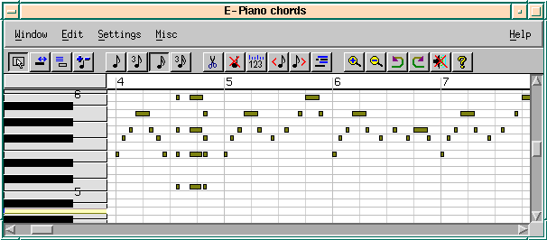
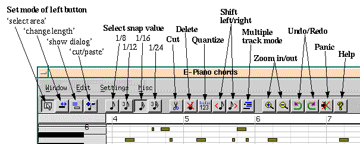
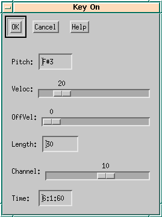
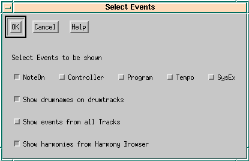
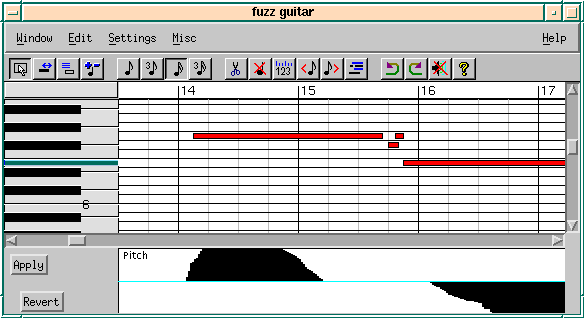

Chapter 5: Piano window
The pianowindow shows Note-On events of a single Track.
Displayed track and bar is selected by clicking with the right
mouse button into the trackwindow.
\begin{figure}
\latexonly{

}
\htmlonly{\image{0cm;0cm}{pianowin.png}}
\caption{Piano Window}
\end{figure}
\begin{figure}
\latexonly{

}
\htmlonly{\image{0cm;0cm}{pwtoolb.png}}
\caption{Pianowin toolbar}
\end{figure}
Buttons to set the mode of the left mouse-button:
- {\em select area} (by dragging a rectangle)
- {\em change length} (by dragging the ’tail’ of an event)
- {\em show dialog} (\helpref{edit existing event or create a new one}{pweventedit})
- {\em cut/paste} (great for fast note-by-note editing)
Note that these actions can also be done by using other mouse buttons or
by combining shift- and ctrl-keys with mouse buttons
(see \helpref{Mouse actions}{mouseact}).
Buttons to set the most common \helpref{snap}{snap} values (pasted events
will be placed at nearest ’snap’ value, similar to a ’grid’ in a graphics
paint system):
- set snap to 1/8 note
- set snap to 1/12 note
- set snap to 1/16 note
- set snap to 1/24 note
Buttons to manipulate events:
- \helpref{Cut}{pwcutpaste}
- \helpref{Delete}{pwcutpaste}
- \helpref{Quantize}{quantize}
- \helpref{Shift left}{pwshift}
- \helpref{Shift right}{pwshift}
- Enable {\em multi track mode} as described \helpref{here}{pwevents}
Buttons for other operations:
- \helpref{Undo}{undo}
- \helpref{Redo}{undo}
- \helpref{Panic (MIDI reset)}{panic}
- \helpref{Help}{help}
For a fast reference to mouse-actions, please invoke the {\em Help-$>$Mouse}
menu entry.
{\bf Mouse actions in the event area}
- {\em Select events}. When in ’select area’ mode
(see \helpref{toolbar}{pwtoolbar}), events can
be selected by dragging a rectangle with the left mouse button.
A selection is continued by dragging while holding the shiftkey down. (To
continue a selection outside the current view, you need to scroll using the
window scrollbars before doing shiftkey + left-button again.)
- {\em Adjust note length by dragging}. Click on the event and drag
the ’tail’ while holding mouse button down. This can be done with the
left mouse button when in ’change length’ mode
(see \helpref{toolbar}{pwtoolbar}), or by using the right mouse button.
- {\em Show event dialog}. Opens a dialog box to
modify the values of the event
or to create a new event. This can be done with the left mouse button when in
’show dialog’ mode
(see \helpref{toolbar}{pwtoolbar}), or by using ctrl+middle (if
available).
- {\em Cut / paste events}. Clicking on an event cuts the event to the
internal cut/paste buffer, clicking on an empty position pastes the
buffer contents into the pianowin. This can be done with the left mouse
button when in ’cut/paste’ mode
(see \helpref{toolbar}{pwtoolbar}), with the middle mouse button (if
available) or with shift+ctrl+left.
- {\em Copy events}. Copy an event into the internal cut/paste buffer. Do
this by pressing shift+ctrl+right or shift+middle (if available).
- {\em Change velocity of event}. Holding the controlkey while pressing the
left or right button on an event increments/decrements the velocity. The
velocity value is displayed in the left end of the top line (just
above the piano keyboard).
- {\em Change track in ’single track mode’}. You may change the track by pressing
shift + cursor keys.
- {\em Change track in ’multiple track mode’}. In this mode you can change track
by pressing the right mouse button on an event from another track
(painted with grey color).
- {\em Listen to pitch}. Do this by pressing shift+right.
{\bf Mouse actions in the top line}
- {\em Start/stop play}. Click the left mouse button on the top line to
start/stop playing (record is not available in the pianowin).
- {\em Start cycle play}. Select some events (some bars) and press
shift+left-button. If there is no selection active, 4 bars are cycled.
\begin{figure}
\latexonly{

}
\htmlonly{\image{0cm;0cm}{eventdlg.png}}
\caption{Example of event editing dialog}
\end{figure}
There are a number of dialogs that allow for detailed editing of single events.
The dialogs are invoked by clicking left mouse button in the pianowin when
in {\em show dialog} mode (see \helpref{toolbar}{pwtoolbar}). Events that
can be created or edited are {\em Note On}, {\em Controller},
{\em Program Change}, {\em Set Tempo} and {\em System Exclusive}.
Some entries work the same way as discussed in the \helpref{edit menu}{twedit}
of the trackwindow. Only the entries that is special for the pianowindow is
described here.
Copies selected events into an internal buffer. Events can be pasted to an
empty space.
Cut is like Copy + delete.
Moves selected events to the left or right. The amount is snaps, which can be
adjusted in the settings-menu.
Quantizes selected events to the current snap-setting.
Exchanges the position of selected events. Try it.
Some entries work the same way as discussed in the
\helpref{settings menu}{twsettings} of the trackwindow.
\begin{figure}
\latexonly{

}
\htmlonly{\image{0cm;0cm}{pwevents.png}}
\caption{Pianowin show-events dialog}
\end{figure}
You can specify what events are to be shown in the pianowin.
- {\em NoteOn, Controller, Program, Tempo, SysEx}. These events can be
shown and
edited in the pianowin. If you select exactly one, the piano at the left
hand side will be replaced by a list of controller- or program names.
- {\em Show drumnames}. Switch it off if you prefer to see the piano
keyboard instead of drumnames.
- {\em Show events from all tracks}. Displays all events
(’multi track mode’). Events from active track are shown
red, the others grey. Clicking with the right mouse button on a grey event
changes the actual track.
- {\em Show harmonies from harmonybrowser}. Displays the chords and
scales from the harmony browser. To see the chords, you must first open the
harmonybrowser and define a chord sequence. Then you have to mark some bars
in the trackwin to show, where the chords should go. Now the pianowin shows
notes from chords in light blue and notes from the scale in light green.
The start time of pasted events will be quantized to this value. This value is also
used in the quantize- and shift dialogs in pianowin and trackwin.
\begin{figure}
\latexonly{

}
\htmlonly{\image{0cm;0cm}{pitched.png}}
\caption{Graphical editing in Pianowin}
\end{figure}
Opens a painting area where you can paint values of the specified type (pitch, controller, ...).
Painting with mouse is done analogous to the \helpref{random rhythm generator}{randrhy}, make sure
you use the right button to set values to zero because you can’t paint an exact zero because
of limited screen resolution. Use the Apply button to make your changes take effect.
Also ’tempo’ change events can be painted. Please note that tempo changes
in the middle of the song may not work if audio/midi synchronization is
enabled (see \helpref{Global Audio dialog}{globalsettings}).
Opens a window displaying the frets of a guitar. Moving the mouse over the guitar board shows
the names of the notes and moves the black bar in the pianowin. Same works the other way around,
moving the mouse in the pianowin shows the notes on the guitar board.
Also, the actual contents of the pianowin cut / paste buffer is shown (this may be set from the
harmony browser too, so you can see how chords could be played).
Clicking with the left button adds events to the pianowin buffer so you can paste them into
your song. In chord mode (settings dialog), if you add several events to the buffer, they all
start at the same time, otherwise they are generated one after the other (length is the
current snap setting).
- {\em Pianowin} - loads the pianowin chapter of the help file.
- {\em Mouse} - displays a dialog that describes mouse actions (what the buttons
do etc.).
For more info about help see \helpref{’Help System’}{help} in the {\em Track Window} chapter.